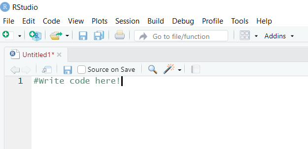
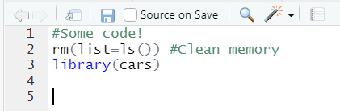

# This is an R comment: nothing is gonna happen02 - Working with R Scripts
econ 490
r
scripts
commenting
delimiters
clearing
This notebook covers how to write and work with R scripts. We go over how to create a script, commenting, and preparing our R session.
Prerequisites
- Connect to a Jupyter Lab session using R.
Learning Outcomes
- Be able to effectively use R script files.
2.1 Opening R Scripts from R Interface
If we choose to work with R, it is very advisable to install RStudio here. RStudio provides a nice interface to work with R code. Whenever we work with R or any other programming language, it is very important that we make our code replicable. For instance, we may be working on a graph and realize that it is not looking the way we wanted it to look. Without a list of the commands we previously used, it may take a long time to re-do said graph with the proper corrections.
R provides a way to save code notebooks, also known as R scripts, where we can keep all the code we ran in a particular instance. To open the R Script Editor from our R session, we use the shortcut Ctrl(Command)+9 or click this part of the R Interface:

We can now observe a new window in your computer that looks like this:

To run a highlighted part of code, we can use Ctrl(Command)+Enter.
Note: The Jupyter cells in the following lectures will work as an R script proxy, but whenever we run R non-interactively it is very important to keep track of any changes made in an R script.
2.2 Writing Comments in our Code
Writing comments for different parts of our code is a very good practice. It allows us to revisit code we wrote in the past and understand what we were doing.
Comments use the hashtag # like below.
Notice that we can also put it next to any line of code and it will still recognize such part as a comment. See below!
5 # This command is printing the number 5Unlike other programs such as Stata, R does not allow multi-line comments. We need to put a hashtag at the beginning of each comment line.
#Multi-line comments only work...
#this way!On the website, the comments are highlighted in grey and commands are highlighted in blue. However, we can see from the following image that the comments are highlighted with the colour green within our R scripts. Whenever we see that colour, we can automatically recognize that as being a comment made by the author. Similarly, we can see that the recognized R commands in our script are highlighted in blue. These colours help us differentiate comments from code.

2.3 Clearing the R Session
Whenever we begin working with a new R session, it is advisable to clear the memory of any pre-existing objects. In Stata, this is done by the clear command. In R, we need to provide the list of objects to be removed from memory. The best way to do this is to provide a list of everything that exists in memory:
rm(list=ls())We want to include this line at the beginning of any new R script we create.
2.4 Wrap Up
When producing a research project, organization and attention to detail are extremely important skills to develop. That is why we should always save the R scripts in an easy-to-reach folder as soon as we begin our work by clicking the save icon on the top right. It is good practice to also save our R script each and every time we run it. Getting in the habit of doing this will save many hours of redoing accidentally lost work when a file closes!
We will be learning more about how to organize all of our files in Module 17.
Note: Showing an R script to a TA, instructor, or supervisor is a great way to get help or feedback. It is also good to submit a script for any practical assignments using Stata.